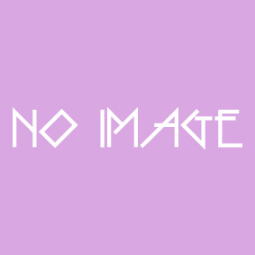
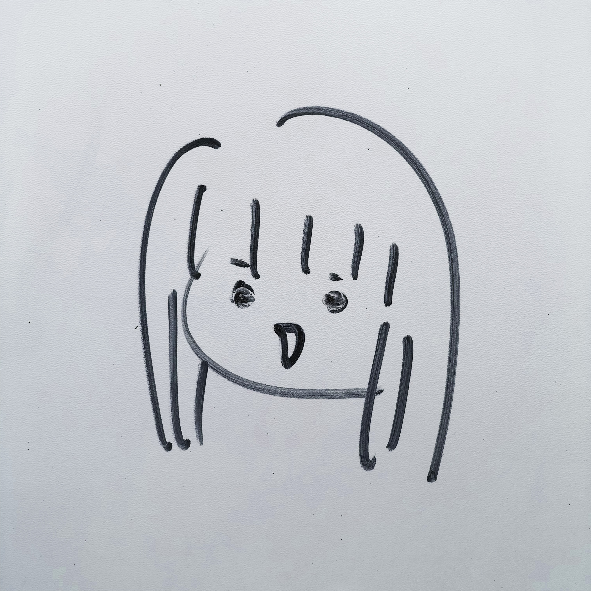

我々は、AI（人工知能）を使って「ウォーリーをさがせ！」「ミッケ！」といった
視覚探索絵本を攻略しよう！という目的のもと、画像処理班と自然言語処理班に分かれて
解析方法を模索しています。
また、「ミッケ！」の攻略だけでなく、国内外のAIを活用した事例も調べています。
問題文の中から見つけるべきお題である名詞を抽出することが大切であると予想し、
解析を進めています。
また、その名詞の画像をスクレイピングすることで、学習データへの活用もできるのではないか、
と考えています。
ミッケ！の画像の中から、自然言語処理班が見つけたお題の答えとなる物体の検出をするために
試行錯誤しています。
物体検出には様々な方法があり、その中から適切な手法を選択するために様々な方法を
試しています。
人工知能でウォーリーの顔を探す班です。
中間発表まででは、Cloud AutoML Visionを使用して学習させ、
さらにそれに画像を与えることによってそれがウォーリーかそうじゃないかを判別しよう、
ということをしていました。
後期に関してはAIを活用した事例を調べ、今後のAIの展望を考えています。

Y先生
| H 代表兼全体管轄 |
S 副代表兼ミッケ自然言語処理班 |
K ミッケ画像処理班 |
| I ミッケ画像処理班 |
N ミッケ自然言語処理班 |
T ミッケ自然言語処理班 |
|  | ||
| S ウォーリー班 |
T ウォーリー班 |
岡村(CD) ウォーリー班 |
普段の様子はこちらからどうぞ